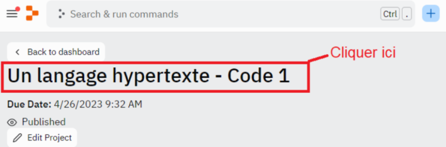

Durée : 45 minutes
Environnement de travail : replit
En programmation, toute donnée a un type. Un type va définir la nature des différentes valeurs que peut prendre une donnée. En abordant les variables, on s’est rendu compte que les données peuvent être de type nombre, de type chaîne de caractères, de type booléen, etc.
Il faut savoir que JavaScript est un langage très peu typé. En effet, il existe des langages comme Java qui sont fortement typés, c’est-à-dire qu’il va falloir, par exemple, indiquer quel est le type d’une variable à chaque fois que l’on déclarera celle-ci. On indiquera alors si c’est un booléen, une chaîne, un entier, etc. À l’inverse, JavaScript a un typage très dynamique, ce qui rend son utilisation plus accessible, ce qui peut, dans des cas plus complexes, poser des problèmes.
Malgré le faible typage de JavaScript, qui dans bien des cas, peut faciliter le codage, il est important pour nous de bien connaître les différentes structures de données natives, c’est-à-dire les types de données. Cela nous permettra de mieux comprendre comment fonctionne le traitement des données en JavaScript, et ainsi d’éviter des erreurs. Par ailleurs, cette compréhension vous sera indispensable dans votre parcours de développeur, car ce sont des notions que l’on va retrouver dans les autres langages de programmation.
Les types de données dits « primitifs » (qui ne comprennent pas les objets) définissent des valeurs que l’on ne peut pas changer (des valeurs immuables). Ces valeurs immuables s’appellent « valeurs primitives ».
Dans ce cours, nous nous intéresserons donc aux différents types de données en JavaScript, en nous focalisant sur les types primitifs (qui définissent les fameuses « valeurs primitives »). Nous ne parlerons donc pas des objets dans ce cours. Nous ferons appel à de nombreuses reprises à l’opérateur typeof permettant de renvoyer le type d’une donnée. Le cours sera composé de nombreux exemples de codes ainsi que de plusieurs exercices que vous pourrez réaliser vous-même en local ou via Replit.
Pour avoir accès au code et à l'IDE intégré de cette leçon, vous devez :
Une fois ces étapes effectuées, nous vous conseillons de rafraîchir votre navigateur si le code ne s'affiche pas.
En cas de problème, redémarrez votre navigateur et vérifiez que vous avez bien accepté les cookies de connexion nécessaires avant de recommencer la procédure.
Pour accéder au code dans votre cours, cliquez sur le nom du lien Replit dans la fenêtre.
Par exemple :
